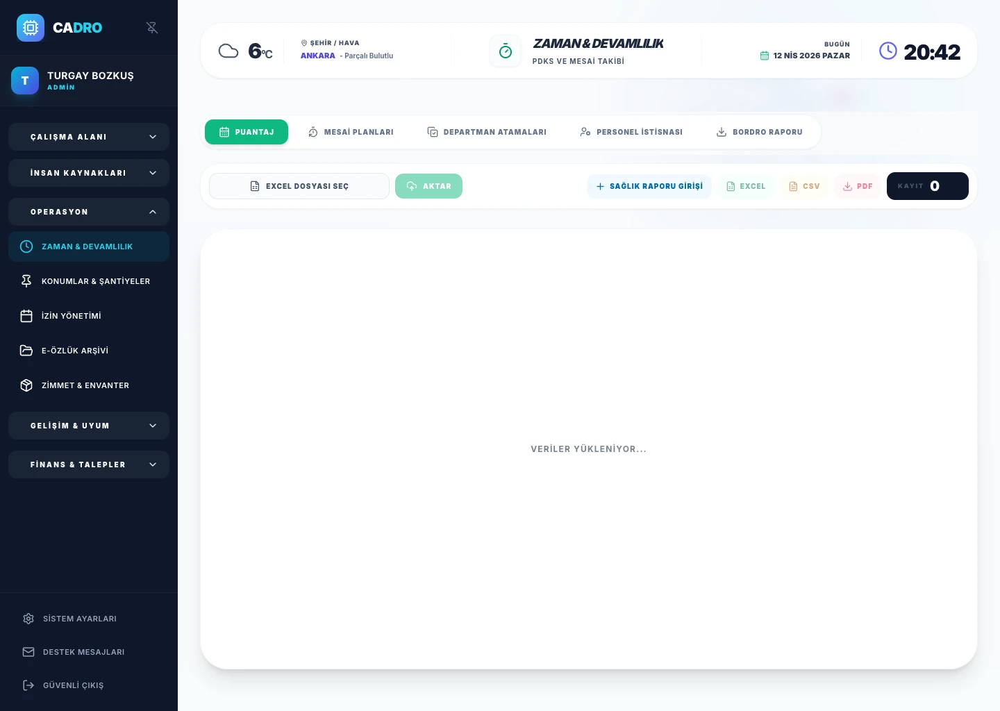

Shift Scheduling
Create flexible shift templates, assign employees, and handle swap requests — all in one dashboard.

TIME & ATTENDANCE
Payroll and shift management software: Collect check-in and check-out data, shift plans, exceptions, and payroll-ready reports within the same structure. CADRO helps HR and operations teams make their time-based daily processes more visible, controlled, and measurable.

HOW IT WORKS
Manual attendance tracking in spreadsheets leads to overtime errors, payroll disputes, and compliance risks.
Automated timesheets, real-time shift dashboards, and multi-location attendance visibility.
Accurate payroll, zero overtime disputes, and significant time savings for HR and operations.
MODULE FEATURES
Create flexible shift templates, assign employees, and handle swap requests — all in one dashboard.
Clock-in data is automatically converted to timesheets. Overtime, late arrivals, and absences are calculated instantly.
Track attendance across offices, warehouses, and field teams from a centralized dashboard.
SHIFT MANAGEMENT
Drag-and-drop shift assignment, automatic conflict detection, and employee swap requests make scheduling effortless even for large teams.
Explore Leave Management →
PAYROLL INTEGRATION
Approved timesheets automatically calculate gross hours, overtime multipliers, and deductions. Export directly to your payroll system.
Explore Expense Module →
INTERNAL LINKS
Leave requests and attendance data stay synchronized for accurate balance tracking.
Explore Dossier Module →Attendance patterns provide context for performance evaluations.
Explore Performance Module →Travel and field expenses tie directly to attendance and location data.
Explore Expense Module →FAQ
Yes. CADRO supports integration with fingerprint readers, facial recognition systems, and NFC badge readers.
Employees clock in from the mobile app with GPS verification, ensuring accurate location-based attendance.
Yes. CADRO supports unlimited shift templates, rotation schedules, and department-specific patterns.
The system automatically detects overtime based on defined work schedules and applies the correct multipliers per labor law regulations.
READY?
Eliminate spreadsheet errors, gain real-time visibility, and simplify payroll with CADRO.